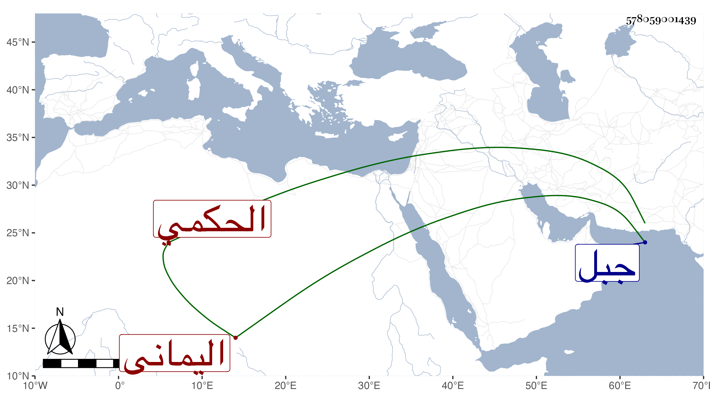

0902Sakhawi.DawLamic.ITO20230111-ara1.EIS1600.578059001439
Biography ID: 578059001439
808
داود بن محمد بن أبي القسم التزيلي الحكمي اليماني ، وتزيل بالضم ثم معجمة مفتوحة من بني الحكمي . كان جليلا مقيما في جبل بقرية تسمى سعد بضمتين له بها زاوية وأتباع مقبول الكلمة مقصودا بالفتوح الذي يستمد منه لاطعام المقيمين تحت نظره والواردين عليه مع سلوك التواضع وتولى خدمة الفقراء بنفسه حتى أنه يباشر المجذمين ويفلي أثوابهم ويطعمهم بانشراح لذلك . ويحكي له كرامات وأحوال . مات بعد سنة سبعين بسعد ، وخلف ابنين إبراهيم ومحمد وممن أخذ عنه عيسى بن عوضه وحدثني بكثير من كراماته .
